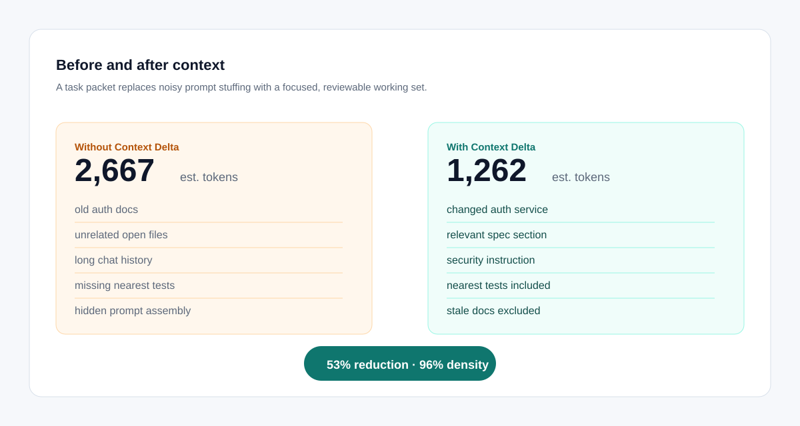
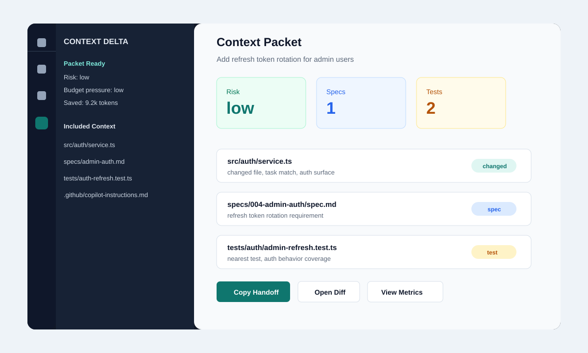
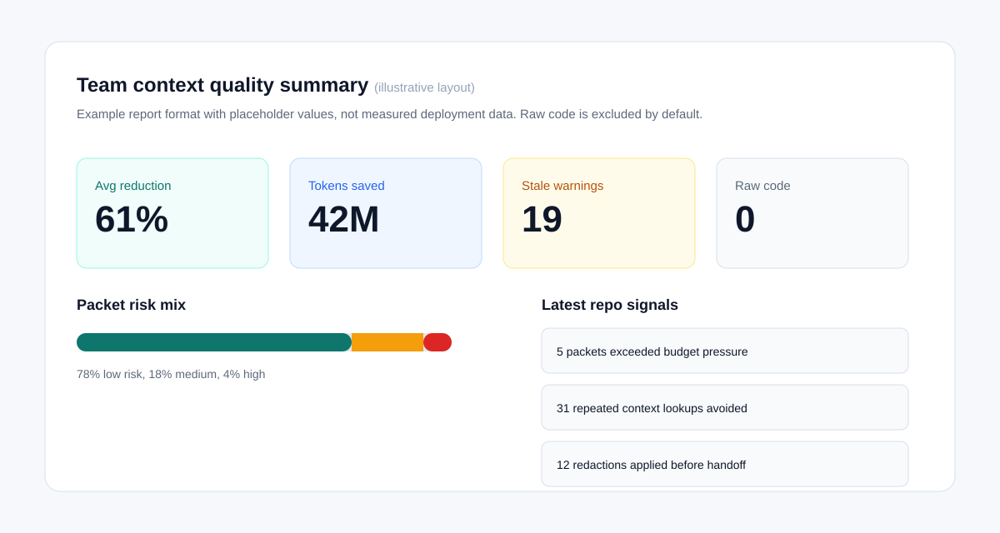

Without Context Delta
- Old auth docs mixed with current requirements
- Related tests missed
- Repo instructions buried
- Token cost unknown
- Exclusions invisible
Apache-2.0 open source · Local-first · Alpha
Context Delta builds a small, fresh, inspectable packet — the files that changed, the tests that cover them, the spec that defines them, the rules that govern them — for Codex, Claude Code, GitHub Copilot, or any MCP agent. The default is quiet: prepare context, show risk, and interrupt only when something needs review.
~2,667 estimated baseline tokens ~1,262 focused tokens · 96% useful-context density · related test kept · stale spec dropped
Measured on the bundled demo workspace and reproducible with npm run eval:multi, not an illustrative figure.
Quick start
Local-first and tool-agnostic. No IDE switch, no account. Packets are built and stored locally; agents can use the handoff directly, while the full packet stays available as the audit trail. Works with or without git.
# Agent-integrated path
npm install
npm run setup -- --target mcp
# Copy host config and connect your MCP-capable agent
npm run doctor -- --mcp
# Then ask your agent normally.
# The agent should call prepare_context before editing
# and review_context_drift before final review.# Manual handoff path
npm install
npm run setup -- --target cli
npm run prepare -- "Review the current UI changes"
Context ready · risk=low · budget=low · warnings=0
# Paste the handoff into Codex, Claude, or Copilot.
# After the agent edits:
npm run driftThe failure mode
Agents often receive stale specs, random open files, missing tests, hidden prompt assembly, and too much unrelated code. Context Delta makes the working set visible, bounded, and current.
The demo in one glance
A packet turns a broad, messy context pile into the files, specs, tests, rules, and warnings the agent needs for the task at hand.

Illustrative example. Actual savings depend on your repo, the task, and the baseline you compare against.
npm run prepare -- "Add admin refresh token rotation"
prepare_context(task)
npm run drift
The honest question
Codex, Copilot, and Claude Code already gather context for you. The difference is that they do it invisibly — you can't see what was sent, you can't correct it, and you can't measure it across a team. Context Delta turns context into an artifact you control.
Every included file, spec, and test carries a reason. Every exclusion is listed. The packet is available when risk or drift says review is needed.
One local packet feeds Codex, Copilot, Claude Code, or any MCP agent. Change tools without rebuilding your context setup.
Privacy-safe metrics show context reduction, risk, and stale-spec warnings — without shipping raw source to a server.
How it works
Read git status or local snapshots, specs, docs, tests, instructions, and user controls.
Prefer fresh changed files, matching spec sections, nearby tests, and governing rules.
Return a prompt-ready handoff plus risk, budget, warning, test, and spec signals.
After agent edits, compare current changes with the latest packet and rebuild only when needed.
Product surface
The engine writes packets, reports, diffs, handoffs, and manager summaries under `.contextdelta/`. Integrations stay thin, visible, and replaceable.
$ npm run prepare -- "Add refresh token rotation"
Context ready · risk=low · budget=low · warnings=0 · tests=2 · specs=1
Packet is ready for spec-driven AI coding.
$ npm run drift
Risk: low
Changed outside packet: 0Sample CLI output. Token figures are illustrative and computed locally per run.
Editor preview
Developers can prepare context, copy a Codex, Claude, or Copilot handoff, check setup, review drift, and inspect diffs without leaving VS Code.

Keep using Codex, Copilot, Claude Code, or local agents. Context Delta prepares the packet underneath.
Bring Spec Kit, tasks, acceptance criteria, implementation files, and tests into one visible working set.
Inspect why files were included, what was excluded, what changed since the previous packet, and what risks remain.
Track estimated token savings, risk mix, stale spec warnings, redactions, and budget pressure without collecting raw code.
Observable by design
Useful-context density, eval results, and local rollups help teams improve quality without pretending token savings prove correctness.
Demo numbers are illustrative from the bundled eval workspace. Token reduction is a cost signal; packet-quality eval is the correctness signal.

Start here